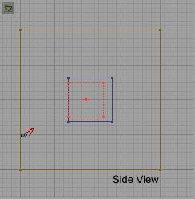
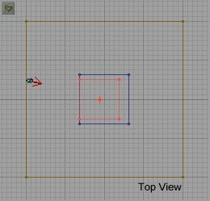
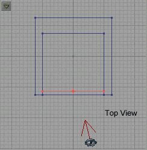
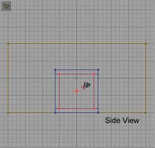
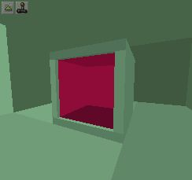
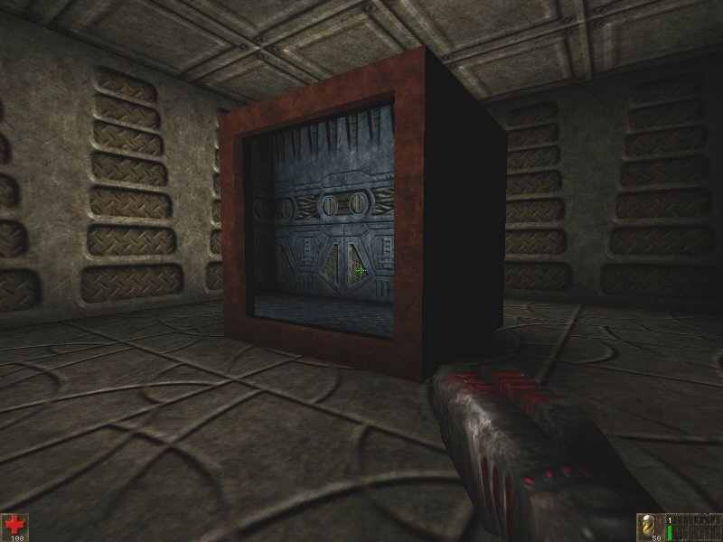

Portals are essentially zones that not only teleport you from point A to point B, but allow you to SEE where you are going to. The portal is a "window" to another place. Since they are actually zones which "connect" the actual terminology would be Warp Zone. In this tutorial the term "Warp Zone" will refer to the portal structure. The term "portal" will refer to the actual zone sheet which is the "window" to the warp destination. You can build a simple "doorway" portal, or a much better effect is a "closet" that you can walk all the way around, or walk into and "warp" to another area (see DmRadikus).
For a warp zone to work you need two warp zones. The two zones have to be the exact same size and the warp zone structure can only have one portal (opening). It will actually function with two open sides, but the effect this has on the portal is weird to say the least.
In this tutorial we are going to build two unattached rooms. We are going to build two portals and we will discuss some options when building portals. To start with pick a texture set and build a starting room 256 x 512 x 512. Texture it anyway you like. Now highlight the room brush, and right-click. Choose "Copy Polygons to Brush" and then deselect the room brush. Move the red brush to a another location and subtract it. You should now have two identical rooms. Change the textures in one so they don't look like alike. Now build a work room 512 x 512 x 512 off to the side. We will build the portal structure in this work room.
Now we have to decide how big our portal "closet" will be. We know our two rooms are 256 high, so it should be taller than that. Let's make the portal itself 128 x 128. Now the structure or closet this portal will sit in must be slightly larger. We want to allow for a lip of 16 units on each side, so we must make the structure 32 units larger than the portal--16 (lip) x 2(two sides)=32 units. Select the cube tool, and go to properties and size it to 160 x 160 x 160 (or 128+32). Make sure your red brush is in the middle of the work room and then add it to the world. This block is the "closet" for the portal so pick a nice texture for it. Now resize the red brush to 128 x 128 x 128 and position it so it "touches" one side of the block. See below:
 Now subtract the brush. This should "hollow out" most of the block, leaving one side open. Resize the red brush so that it completely surrounds the block and then intersect it. Move the new red brush to the first room we made and place it in the center of the room. Add this brush. Now move the red brush to the center of the second room and add it.
Now we have our "closets" build we need to turn them into zones, and then warp zones. To zone them we need to add zone portals over the opening to "seal" them. Select the sheet brush tool and make it 128 x 128 (the size of the opening in the block), and then select X-wall or Y-wall depending on which way your opening faces. Now move the brush to the opening on the block of one of the portals and make sure it is centered. Leave a lip so it is not right on the edge of the opening, but a little bit back (I resized the grid to 8 units and moved it back one "snap" or 8 units).
 When it covers the opening then click the Add Special Brush tool, and from the "Predefined" menu select "Zone Portal" and then add this brush. Move the red brush to the next portal (in the other room) and repeat. You can check to make sure you have the zones correct now by Rebuilding and then switching the 3D view to Zone/Portal view and making sure you have a different color inside the block.
Now that we have the portals zoned we need to define them as Warp Zones and set their properties so the warp to each other. In the Browser select Classes. Go to Info/ZoneInfo and highlight WarpZoneInfo. Put a WarpZoneInfo inside each of the portals. Go to the first WarpZoneInfo you added and open it's properties dialog. You will see a heading titled (oddly enough) "WarpZoneInfo." Expand this and look at the last two fields:
OtherSideURL --The "name" of the destination portal ThisTag --the "name" of this portal.
Name one Portal Warp1 and the other Warp2, that is set the above fields to Warp1 and Warp2 in one WarpZoneInfo and to Warp2 and Warp1 in the other. Now add some lights in each room and a player start in one. Rebuild and run the map. You should now be able to walk all around the portal structures and see from one room to the next. You should be able to walk through the portal and "warp" to the other room.
If you should get a HOM (hall of mirrors) effect or other strangeness in your portals, try deleting the zone portal sheets, rebuilding, and then adding them in again, making sure they are lined up correctly. Portals are fairly easy to make, but can be kind of "touchy." Just remember to make the warp zones the same size and make sure the sheets are lined up correctly, and that you have the WarpZoneInfo properties correct and they should work fine.
I have included an example map with this tutorial for you to examine (incase something doesn't work right--I told you portals are touchy!).
Play around with these Portals and have fun. Try different things and see what works doesn't work. Try making different shaped portals in different locations (one that comes out near the ceiling, etc...). As always, if you have any questions e-mail me.
-Wolf